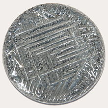

Tellurium
|  | |||||||||||||||||||||||||||||||||||||||||||||||||||||||||||||||||||||||||||||||||||||||||||||||||||||||||||||||||||||||||||||||||||||||||||||||||||||||||||||||||||||||||||||||||||||||||||||||||||||||||||||||||||||||||||||||||||||
| General properties | |||||||||||||||||||||||||||||||||||||||||||||||||||||||||||||||||||||||||||||||||||||||||||||||||||||||||||||||||||||||||||||||||||||||||||||||||||||||||||||||||||||||||||||||||||||||||||||||||||||||||||||||||||||||||||||||||||||
|---|---|---|---|---|---|---|---|---|---|---|---|---|---|---|---|---|---|---|---|---|---|---|---|---|---|---|---|---|---|---|---|---|---|---|---|---|---|---|---|---|---|---|---|---|---|---|---|---|---|---|---|---|---|---|---|---|---|---|---|---|---|---|---|---|---|---|---|---|---|---|---|---|---|---|---|---|---|---|---|---|---|---|---|---|---|---|---|---|---|---|---|---|---|---|---|---|---|---|---|---|---|---|---|---|---|---|---|---|---|---|---|---|---|---|---|---|---|---|---|---|---|---|---|---|---|---|---|---|---|---|---|---|---|---|---|---|---|---|---|---|---|---|---|---|---|---|---|---|---|---|---|---|---|---|---|---|---|---|---|---|---|---|---|---|---|---|---|---|---|---|---|---|---|---|---|---|---|---|---|---|---|---|---|---|---|---|---|---|---|---|---|---|---|---|---|---|---|---|---|---|---|---|---|---|---|---|---|---|---|---|---|---|---|---|---|---|---|---|---|---|---|---|---|---|---|---|---|---|---|
| Name, symbol | tellurium, Te | ||||||||||||||||||||||||||||||||||||||||||||||||||||||||||||||||||||||||||||||||||||||||||||||||||||||||||||||||||||||||||||||||||||||||||||||||||||||||||||||||||||||||||||||||||||||||||||||||||||||||||||||||||||||||||||||||||||
| Pronunciation | /tɨˈlʲʊəriəm/ te-LEWR-ee-əm |
||||||||||||||||||||||||||||||||||||||||||||||||||||||||||||||||||||||||||||||||||||||||||||||||||||||||||||||||||||||||||||||||||||||||||||||||||||||||||||||||||||||||||||||||||||||||||||||||||||||||||||||||||||||||||||||||||||
| Appearance | silvery lustrous gray | ||||||||||||||||||||||||||||||||||||||||||||||||||||||||||||||||||||||||||||||||||||||||||||||||||||||||||||||||||||||||||||||||||||||||||||||||||||||||||||||||||||||||||||||||||||||||||||||||||||||||||||||||||||||||||||||||||||
| Tellurium in the periodic table | |||||||||||||||||||||||||||||||||||||||||||||||||||||||||||||||||||||||||||||||||||||||||||||||||||||||||||||||||||||||||||||||||||||||||||||||||||||||||||||||||||||||||||||||||||||||||||||||||||||||||||||||||||||||||||||||||||||
|
|||||||||||||||||||||||||||||||||||||||||||||||||||||||||||||||||||||||||||||||||||||||||||||||||||||||||||||||||||||||||||||||||||||||||||||||||||||||||||||||||||||||||||||||||||||||||||||||||||||||||||||||||||||||||||||||||||||
| Atomic number | 52 | ||||||||||||||||||||||||||||||||||||||||||||||||||||||||||||||||||||||||||||||||||||||||||||||||||||||||||||||||||||||||||||||||||||||||||||||||||||||||||||||||||||||||||||||||||||||||||||||||||||||||||||||||||||||||||||||||||||
| Standard atomic weight (±) | 127.60(3)[1] | ||||||||||||||||||||||||||||||||||||||||||||||||||||||||||||||||||||||||||||||||||||||||||||||||||||||||||||||||||||||||||||||||||||||||||||||||||||||||||||||||||||||||||||||||||||||||||||||||||||||||||||||||||||||||||||||||||||
| Element category | metalloid | ||||||||||||||||||||||||||||||||||||||||||||||||||||||||||||||||||||||||||||||||||||||||||||||||||||||||||||||||||||||||||||||||||||||||||||||||||||||||||||||||||||||||||||||||||||||||||||||||||||||||||||||||||||||||||||||||||||
| Group, block | group 16 (chalcogens), p-block | ||||||||||||||||||||||||||||||||||||||||||||||||||||||||||||||||||||||||||||||||||||||||||||||||||||||||||||||||||||||||||||||||||||||||||||||||||||||||||||||||||||||||||||||||||||||||||||||||||||||||||||||||||||||||||||||||||||
| Period | period 5 | ||||||||||||||||||||||||||||||||||||||||||||||||||||||||||||||||||||||||||||||||||||||||||||||||||||||||||||||||||||||||||||||||||||||||||||||||||||||||||||||||||||||||||||||||||||||||||||||||||||||||||||||||||||||||||||||||||||
| Electron configuration | [Kr] 4d10 5s2 5p4 | ||||||||||||||||||||||||||||||||||||||||||||||||||||||||||||||||||||||||||||||||||||||||||||||||||||||||||||||||||||||||||||||||||||||||||||||||||||||||||||||||||||||||||||||||||||||||||||||||||||||||||||||||||||||||||||||||||||
| per shell | 2, 8, 18, 18, 6 | ||||||||||||||||||||||||||||||||||||||||||||||||||||||||||||||||||||||||||||||||||||||||||||||||||||||||||||||||||||||||||||||||||||||||||||||||||||||||||||||||||||||||||||||||||||||||||||||||||||||||||||||||||||||||||||||||||||
| Physical properties | |||||||||||||||||||||||||||||||||||||||||||||||||||||||||||||||||||||||||||||||||||||||||||||||||||||||||||||||||||||||||||||||||||||||||||||||||||||||||||||||||||||||||||||||||||||||||||||||||||||||||||||||||||||||||||||||||||||
| Phase | solid | ||||||||||||||||||||||||||||||||||||||||||||||||||||||||||||||||||||||||||||||||||||||||||||||||||||||||||||||||||||||||||||||||||||||||||||||||||||||||||||||||||||||||||||||||||||||||||||||||||||||||||||||||||||||||||||||||||||
| Melting point | 722.66 K (449.51 °C, 841.12 °F) | ||||||||||||||||||||||||||||||||||||||||||||||||||||||||||||||||||||||||||||||||||||||||||||||||||||||||||||||||||||||||||||||||||||||||||||||||||||||||||||||||||||||||||||||||||||||||||||||||||||||||||||||||||||||||||||||||||||
| Boiling point | 1261 K (988 °C, 1810 °F) | ||||||||||||||||||||||||||||||||||||||||||||||||||||||||||||||||||||||||||||||||||||||||||||||||||||||||||||||||||||||||||||||||||||||||||||||||||||||||||||||||||||||||||||||||||||||||||||||||||||||||||||||||||||||||||||||||||||
| Density near r.t. | 6.24 g·cm−3 | ||||||||||||||||||||||||||||||||||||||||||||||||||||||||||||||||||||||||||||||||||||||||||||||||||||||||||||||||||||||||||||||||||||||||||||||||||||||||||||||||||||||||||||||||||||||||||||||||||||||||||||||||||||||||||||||||||||
| when liquid, at m.p. | 5.70 g·cm−3 | ||||||||||||||||||||||||||||||||||||||||||||||||||||||||||||||||||||||||||||||||||||||||||||||||||||||||||||||||||||||||||||||||||||||||||||||||||||||||||||||||||||||||||||||||||||||||||||||||||||||||||||||||||||||||||||||||||||
| Heat of fusion | 17.49 kJ·mol−1 | ||||||||||||||||||||||||||||||||||||||||||||||||||||||||||||||||||||||||||||||||||||||||||||||||||||||||||||||||||||||||||||||||||||||||||||||||||||||||||||||||||||||||||||||||||||||||||||||||||||||||||||||||||||||||||||||||||||
| Heat of vaporization | 114.1 kJ·mol−1 | ||||||||||||||||||||||||||||||||||||||||||||||||||||||||||||||||||||||||||||||||||||||||||||||||||||||||||||||||||||||||||||||||||||||||||||||||||||||||||||||||||||||||||||||||||||||||||||||||||||||||||||||||||||||||||||||||||||
| Molar heat capacity | 25.73 J·mol−1·K−1 | ||||||||||||||||||||||||||||||||||||||||||||||||||||||||||||||||||||||||||||||||||||||||||||||||||||||||||||||||||||||||||||||||||||||||||||||||||||||||||||||||||||||||||||||||||||||||||||||||||||||||||||||||||||||||||||||||||||
vapor pressure
|
|||||||||||||||||||||||||||||||||||||||||||||||||||||||||||||||||||||||||||||||||||||||||||||||||||||||||||||||||||||||||||||||||||||||||||||||||||||||||||||||||||||||||||||||||||||||||||||||||||||||||||||||||||||||||||||||||||||
| Atomic properties | |||||||||||||||||||||||||||||||||||||||||||||||||||||||||||||||||||||||||||||||||||||||||||||||||||||||||||||||||||||||||||||||||||||||||||||||||||||||||||||||||||||||||||||||||||||||||||||||||||||||||||||||||||||||||||||||||||||
| Oxidation states | 6, 5, 4, 2, −2 (a mildly acidic oxide) | ||||||||||||||||||||||||||||||||||||||||||||||||||||||||||||||||||||||||||||||||||||||||||||||||||||||||||||||||||||||||||||||||||||||||||||||||||||||||||||||||||||||||||||||||||||||||||||||||||||||||||||||||||||||||||||||||||||
| Electronegativity | Pauling scale: 2.1 | ||||||||||||||||||||||||||||||||||||||||||||||||||||||||||||||||||||||||||||||||||||||||||||||||||||||||||||||||||||||||||||||||||||||||||||||||||||||||||||||||||||||||||||||||||||||||||||||||||||||||||||||||||||||||||||||||||||
| Ionization energies | 1st: 869.3 kJ·mol−1 2nd: 1790 kJ·mol−1 3rd: 2698 kJ·mol−1 |
||||||||||||||||||||||||||||||||||||||||||||||||||||||||||||||||||||||||||||||||||||||||||||||||||||||||||||||||||||||||||||||||||||||||||||||||||||||||||||||||||||||||||||||||||||||||||||||||||||||||||||||||||||||||||||||||||||
| Atomic radius | empirical: 140 pm | ||||||||||||||||||||||||||||||||||||||||||||||||||||||||||||||||||||||||||||||||||||||||||||||||||||||||||||||||||||||||||||||||||||||||||||||||||||||||||||||||||||||||||||||||||||||||||||||||||||||||||||||||||||||||||||||||||||
| Covalent radius | 138±4 pm | ||||||||||||||||||||||||||||||||||||||||||||||||||||||||||||||||||||||||||||||||||||||||||||||||||||||||||||||||||||||||||||||||||||||||||||||||||||||||||||||||||||||||||||||||||||||||||||||||||||||||||||||||||||||||||||||||||||
| Van der Waals radius | 206 pm | ||||||||||||||||||||||||||||||||||||||||||||||||||||||||||||||||||||||||||||||||||||||||||||||||||||||||||||||||||||||||||||||||||||||||||||||||||||||||||||||||||||||||||||||||||||||||||||||||||||||||||||||||||||||||||||||||||||
| Miscellanea | |||||||||||||||||||||||||||||||||||||||||||||||||||||||||||||||||||||||||||||||||||||||||||||||||||||||||||||||||||||||||||||||||||||||||||||||||||||||||||||||||||||||||||||||||||||||||||||||||||||||||||||||||||||||||||||||||||||
| Crystal structure | hexagonal
 |
||||||||||||||||||||||||||||||||||||||||||||||||||||||||||||||||||||||||||||||||||||||||||||||||||||||||||||||||||||||||||||||||||||||||||||||||||||||||||||||||||||||||||||||||||||||||||||||||||||||||||||||||||||||||||||||||||||
| Speed of sound thin rod | 2610 m·s−1 (at 20 °C) | ||||||||||||||||||||||||||||||||||||||||||||||||||||||||||||||||||||||||||||||||||||||||||||||||||||||||||||||||||||||||||||||||||||||||||||||||||||||||||||||||||||||||||||||||||||||||||||||||||||||||||||||||||||||||||||||||||||
| Thermal expansion | 18 µm·m−1·K−1[2] (at r.t.) | ||||||||||||||||||||||||||||||||||||||||||||||||||||||||||||||||||||||||||||||||||||||||||||||||||||||||||||||||||||||||||||||||||||||||||||||||||||||||||||||||||||||||||||||||||||||||||||||||||||||||||||||||||||||||||||||||||||
| Thermal conductivity | 1.97–3.38 W·m−1·K−1 | ||||||||||||||||||||||||||||||||||||||||||||||||||||||||||||||||||||||||||||||||||||||||||||||||||||||||||||||||||||||||||||||||||||||||||||||||||||||||||||||||||||||||||||||||||||||||||||||||||||||||||||||||||||||||||||||||||||
| Magnetic ordering | diamagnetic[3] | ||||||||||||||||||||||||||||||||||||||||||||||||||||||||||||||||||||||||||||||||||||||||||||||||||||||||||||||||||||||||||||||||||||||||||||||||||||||||||||||||||||||||||||||||||||||||||||||||||||||||||||||||||||||||||||||||||||
| Young's modulus | 43 GPa | ||||||||||||||||||||||||||||||||||||||||||||||||||||||||||||||||||||||||||||||||||||||||||||||||||||||||||||||||||||||||||||||||||||||||||||||||||||||||||||||||||||||||||||||||||||||||||||||||||||||||||||||||||||||||||||||||||||
| Shear modulus | 16 GPa | ||||||||||||||||||||||||||||||||||||||||||||||||||||||||||||||||||||||||||||||||||||||||||||||||||||||||||||||||||||||||||||||||||||||||||||||||||||||||||||||||||||||||||||||||||||||||||||||||||||||||||||||||||||||||||||||||||||
| Bulk modulus | 65 GPa | ||||||||||||||||||||||||||||||||||||||||||||||||||||||||||||||||||||||||||||||||||||||||||||||||||||||||||||||||||||||||||||||||||||||||||||||||||||||||||||||||||||||||||||||||||||||||||||||||||||||||||||||||||||||||||||||||||||
| Mohs hardness | 2.25 | ||||||||||||||||||||||||||||||||||||||||||||||||||||||||||||||||||||||||||||||||||||||||||||||||||||||||||||||||||||||||||||||||||||||||||||||||||||||||||||||||||||||||||||||||||||||||||||||||||||||||||||||||||||||||||||||||||||
| Brinell hardness | 180–270 MPa | ||||||||||||||||||||||||||||||||||||||||||||||||||||||||||||||||||||||||||||||||||||||||||||||||||||||||||||||||||||||||||||||||||||||||||||||||||||||||||||||||||||||||||||||||||||||||||||||||||||||||||||||||||||||||||||||||||||
| CAS Registry Number | 13494-80-9 | ||||||||||||||||||||||||||||||||||||||||||||||||||||||||||||||||||||||||||||||||||||||||||||||||||||||||||||||||||||||||||||||||||||||||||||||||||||||||||||||||||||||||||||||||||||||||||||||||||||||||||||||||||||||||||||||||||||
| History | |||||||||||||||||||||||||||||||||||||||||||||||||||||||||||||||||||||||||||||||||||||||||||||||||||||||||||||||||||||||||||||||||||||||||||||||||||||||||||||||||||||||||||||||||||||||||||||||||||||||||||||||||||||||||||||||||||||
| Naming | after Roman Tellus, deity of the Earth | ||||||||||||||||||||||||||||||||||||||||||||||||||||||||||||||||||||||||||||||||||||||||||||||||||||||||||||||||||||||||||||||||||||||||||||||||||||||||||||||||||||||||||||||||||||||||||||||||||||||||||||||||||||||||||||||||||||
| Discovery | Franz-Joseph Müller von Reichenstein (1782) | ||||||||||||||||||||||||||||||||||||||||||||||||||||||||||||||||||||||||||||||||||||||||||||||||||||||||||||||||||||||||||||||||||||||||||||||||||||||||||||||||||||||||||||||||||||||||||||||||||||||||||||||||||||||||||||||||||||
| First isolation | Martin Heinrich Klaproth | ||||||||||||||||||||||||||||||||||||||||||||||||||||||||||||||||||||||||||||||||||||||||||||||||||||||||||||||||||||||||||||||||||||||||||||||||||||||||||||||||||||||||||||||||||||||||||||||||||||||||||||||||||||||||||||||||||||
| Most stable isotopes | |||||||||||||||||||||||||||||||||||||||||||||||||||||||||||||||||||||||||||||||||||||||||||||||||||||||||||||||||||||||||||||||||||||||||||||||||||||||||||||||||||||||||||||||||||||||||||||||||||||||||||||||||||||||||||||||||||||
|
|||||||||||||||||||||||||||||||||||||||||||||||||||||||||||||||||||||||||||||||||||||||||||||||||||||||||||||||||||||||||||||||||||||||||||||||||||||||||||||||||||||||||||||||||||||||||||||||||||||||||||||||||||||||||||||||||||||
| Decay modes in parentheses are predicted, but have not yet been observed | |||||||||||||||||||||||||||||||||||||||||||||||||||||||||||||||||||||||||||||||||||||||||||||||||||||||||||||||||||||||||||||||||||||||||||||||||||||||||||||||||||||||||||||||||||||||||||||||||||||||||||||||||||||||||||||||||||||
{kind=link}
Tellurium is a chemical element with symbol Te and atomic number 52. A brittle, mildly toxic, rare, silver-white metalloid which looks similar to tin, tellurium is chemically related to selenium and sulfur. It is occasionally found in native form, as elemental crystals. Tellurium is far more common in the universe as a whole than it is on Earth. Its extreme rarity in the Earth's crust, comparable to that of platinum, is partly due to its high atomic number, but also due to its formation of a volatile hydride which caused the element to be lost to space as a gas during the hot nebular formation of the planet.
Tellurium was discovered in the Habsburg Empire, in 1782 by Franz-Joseph Müller von Reichenstein in a mineral containing tellurium and gold. Martin Heinrich Klaproth named the new element in 1798 after the Latin word for "earth", tellus. Gold telluride minerals are the most notable natural gold compounds. However, they are not a commercially significant source of tellurium itself, which is normally extracted as a by-product of copper and lead production.
Commercially, the primary use of tellurium is in alloys, foremost in steel and copper to improve machinability. Applications in solar panels and as a semiconductor material also consume a considerable fraction of tellurium production.
Tellurium has no biological function, although fungi can incorporate it in place of sulfur and selenium into amino acids such as tellurocysteine and telluromethionine.[5] In humans, tellurium is partly metabolized into dimethyl telluride, (CH3)2Te, a gas with a garlic-like odor which is exhaled in the breath of victims of tellurium toxicity or exposure.
Contents
[hide]Characteristics[edit]
Physical properties[edit]
When crystalline, tellurium is silvery-white and when it is in pure state it has a metallic luster. It is a brittle and easily pulverized metalloid. Amorphous tellurium is found by precipitating it from a solution of tellurous or telluric acid (Te(OH)6).[6] Tellurium is a semiconductor that shows a greater electrical conductivity in certain directions which depends on atomic alignment; the conductivity increases slightly when exposed to light (photoconductivity).[7] When in its molten state, tellurium is corrosive to copper, iron and stainless steel. Of the chalcogens, tellurium has the highest melting and boiling points, at 722.66 K (841.12 °F) and 1,261 K (1,810 °F), respectively.[8]
Chemical properties[edit]
Tellurium adopts a polymeric structure, consisting of zig-zag chains of Te atoms. This gray material resists oxidation by air and is nonvolatile.
Isotopes[edit]
Naturally occurring tellurium has eight isotopes. Five of those isotopes, 122Te, 123Te, 124Te, 125Te and 126Te, are stable. The other three, 120Te, 128Te and 130Te, have been observed to be radioactive.[9][10][11] The stable isotopes make up only 33.2% of the naturally occurring tellurium; this is possibly due to the long half-lives of the unstable isotopes. They are in the range from 1013 to 2.2 × 1024 years (for 128Te). This makes 128Te the isotope with the longest half life among all radionuclides,[12] which is approximately 160 trillion (1012) times the age of the known universe.
There are 38 known nuclear isomers of tellurium with atomic masses that range from 105 to 142. Tellurium is among the lightest elements known to undergo alpha decay, with isotopes 106Te to 110Te being able to undergo this mode of decay.[9] The atomic mass of tellurium (127.60 g·mol−1) exceeds that of the following element iodine (126.90 g·mol−1).[13]
Occurrence[edit]
{kind=link}
{kind=link}
With an abundance in the Earth's crust comparable to that of platinum, tellurium is one of the rarest stable solid elements in the Earth's crust. Its abundance is about 1 µg/kg.[14] In comparison, even the rarest of the lanthanides have crustal abundances of 500 µg/kg (see Abundance of the chemical elements).[15]
The extreme rarity of tellurium in the Earth's crust is not a reflection of its cosmic abundance, which is in fact greater than that of rubidium, even though rubidium is ten thousand times more abundant in the Earth's crust. The extraordinarily low abundance of tellurium on Earth is rather thought to be due to conditions in the Earth's formation, when the stable form of certain elements, in the absence of oxygen and water, was controlled by the reductive power of free hydrogen. Under this scenario, certain elements such as tellurium which form volatile hydrides were severely depleted during the formation of the Earth's crust, through evaporation of these hydrides. Tellurium and selenium are the heavy elements most depleted in the Earth's crust by this process.[citation needed]
Tellurium is sometimes found in its native (i.e., elemental) form, but is more often found as the tellurides of gold such as calaverite and krennerite (two different polymorphs of AuTe2), petzite, Ag3AuTe2, and sylvanite, AgAuTe4. The city of Telluride, Colorado was named in hope of a strike of gold telluride (which never materialized, though gold metal ore was found). Gold itself is usually found uncombined, but when found naturally as a chemical compound, it is most often combined with tellurium.
Although tellurium is found with gold more often than in uncombined form, it is found even more often combined with elements other than gold, as tellurides of more common metals (e.g. melonite, NiTe2). Natural tellurite and tellurate minerals also occur, formed by oxidation of tellurides near the Earth's surface. In contrast to selenium, tellurium is not in general able to replace sulfur in its minerals, due to the large difference in ion radius of sulfur and tellurium. In consequence, many common sulfide minerals contain considerable amounts of selenium, but only traces of tellurium.[16]
In the gold rush of 1893, diggers in Kalgoorlie discarded a pyritic material which got in their way as they searched for pure gold. The Kalgoorlie waste was thus used to fill in potholes or as part of sidewalks. Three years passed before it was realized that this waste was calaverite, a telluride of gold that had not been recognized. This led to a second gold rush in 1896 which included mining the streets.[17]
History[edit]
{kind=link}
Tellurium (Latin tellus meaning "earth") was discovered in the 18th century in a gold ore from the mines in Zlatna, near today's city of Sibiu, Romania. This ore was known as "Faczebajer weißes blättriges Golderz" (white leafy gold ore from Faczebaja, German name of Facebánya, now Faţa Băii in Alba County) or antimonalischer Goldkies (antimonic gold pyrite), and, according to Anton von Rupprecht, was Spießglaskönig (argent molybdique), containing native antimony.[18][19] In 1782 Franz-Joseph Müller von Reichenstein, who was then serving as the Austrian chief inspector of mines in Transylvania, concluded that the ore did not contain antimony, but that it was bismuth sulfide.[20] The following year, he reported that this was erroneous and that the ore contained mostly gold and an unknown metal very similar to antimony. After a thorough investigation which lasted for three years and consisted of more than fifty tests, Müller determined the specific gravity of the mineral and noted the radish-like odor of the white smoke which passed off when the new metal was heated, the red color which the metal imparts to sulfuric acid, and the black precipitate which this solution gives when diluted with water. Nevertheless, he was not able to identify this metal and gave it the names aurum paradoxium and metallum problematicum, as it did not show the properties predicted for the expected antimony.[21][22][23]
In 1789, a Hungarian scientist, Pál Kitaibel, also discovered the element independently in an ore from Deutsch-Pilsen which had been regarded as argentiferous molybdenite, but later he gave the credit to Müller. In 1798, it was named by Martin Heinrich Klaproth who had earlier isolated it from the mineral calaverite.[24][22][23][25] The 1960s brought growth in thermoelectric applications for tellurium (as bismuth telluride), as well as its use in free-machining steel, which became the dominant use.[26]
Production[edit]
The principal source of tellurium is from anode sludges produced during the electrolytic refining of blister copper. It is a component of dusts from blast furnace refining of lead. Treatment of 1000 tons of copper ore typically yields one kilogram (2.2 pounds) of tellurium. Tellurium is produced mainly in the United States, Peru, Japan and Canada.[27] For the year 2009 the British Geological Survey gives the following numbers: United States 50 t, Peru 7 t, Japan 40 t and Canada 16 t.[28]
{kind=link}
The anode sludges contain the selenides and tellurides of the noble metals in compounds with the formula M2Se or M2Te (M = Cu, Ag, Au). At temperatures of 500 °C the anode sludges are roasted with sodium carbonate under air. The metal ions are reduced to the metals, while the telluride is converted to sodium tellurite.[29]
- M2Te + O2 + Na2CO3 → Na2TeO3 + 2 M + CO2
Tellurites can be leached from the mixture with water and are normally present as hydrotellurites HTeO3− in solution. Selenites are also formed during this process, but they can be separated by adding sulfuric acid. The hydrotellurites are converted into the insoluble tellurium dioxide while the selenites stay in solution.[29]
- HTeO−
3 + OH− + H2SO4 → TeO2 + SO2−
4 + 2 H2O
The reduction to the metal is done either by electrolysis or by reacting the tellurium dioxide with sulfur dioxide in sulfuric acid.[29]
- TeO2 + 2 SO2 + 2H2O → Te + SO2−
4 + 4 H+
Commercial-grade tellurium is usually marketed as 200-mesh powder but is also available as slabs, ingots, sticks, or lumps. The year-end price for tellurium in 2000 was US$14 per pound. In recent years, the tellurium price was driven up by increased demand and limited supply, reaching as high as US$100 per pound in 2006.[30][31] Despite an expected doubling in production due to improved extraction methods, the United States Department of Energy (DoE) anticipates a supply shortfall of tellurium by 2025.[32]
Compounds[edit]
Tellurium belongs to the same chemical family as oxygen, sulfur, selenium and polonium: the chalcogen family. Tellurium and selenium compounds are similar. It exhibits the oxidation states −2, +2, +4 and +6, with the +4 state being most common.[6]
- Tellurides
Reduction of Te metal produces the tellurides and polytellurides, Ten2−. The −2 oxidation state is exhibited in binary compounds with many metals, such as zinc telluride, ZnTe, formed by heating tellurium with zinc.[33] Decomposition of ZnTe with hydrochloric acid yields hydrogen telluride (H
2Te), a highly unstable analogue of the other chalcogen hydrides, H
2O, H
2S and H
2Se:
- ZnTe + 2 HCl → ZnCl
2 + H
2Te
H
2Te is unstable, whereas salts of its conjugate base [TeH]− are stable.
- Halides
The +2 oxidation state is exhibited by the dihalides, TeCl
2, TeBr
2 and TeI
2. The dihalides have not been obtained in pure form,[34]:274
although they are known decomposition products of the tetrahalides in
organic solvents, and their derived tetrahalotellurates are
well-characterized:
- Te + X
2 + 2 X−
→ TeX2−
4
where X is Cl, Br, or I. These anions are square planar in geometry.[34]:281 Polynuclear anionic species also exist, such as the dark brown Te
2I2−
6,[34]:283 and the black Te
4I2−
14.[34]:285
Fluorine forms two halides with tellurium: the mixed-valence Te
2F
4 and TeF
6. In the +6 oxidation state, the –OTeF
5 structural group occurs in a number of compounds such as HOTeF
5, B(OTeF
5)
3, Xe(OTeF
5)
2, Te(OTeF
5)
4 and Te(OTeF
5)
6.[35] The square antiprismatic anion TeF2−
8 is also attested.[29] The other halogens do not form halides with tellurium in the +6 oxidation state, but only tetrahalides (TeCl
4, TeBr
4 and TeI
4) in the +4 state, and other lower halides (Te
3Cl
2, Te
2Cl
2, Te
2Br
2, Te
2I and two forms of TeI). In the +4 oxidation state, halotellurate anions are known, such as TeCl2−
6 and Te
2Cl2−
10. Halotellurium cations are also attested, including TeI+
3, found in TeI
3AsF
6.[36]
- Oxocompounds
{kind=link}
Tellurium monoxide was first reported in 1883 as a black amorphous solid formed by the heat decomposition of TeSO
3 in vacuum, disproportionating into tellurium dioxide, TeO
2 and elemental tellurium upon heating.[37][38]
Since then, however, some doubt has been cast on its existence in the
solid phase, although it is known as a vapor phase fragment; the black
solid may be merely an equimolar mixture of elemental tellurium and
tellurium dioxide.[39]
Tellurium dioxide is formed by heating tellurium in air, causing it to burn with a blue flame.[33] Tellurium trioxide, β-TeO
3, is obtained by thermal decomposition of Te(OH)
6. The other two forms of trioxide reported in the
literature, the α- and γ- forms, were found not to be true oxides of
tellurium in the +6 oxidation state, but a mixture of Te4+
, OH−
and O−
2.[40] Tellurium also exhibits mixed-valence oxides, Te
2O
5 and Te
4O
9.[40]
The tellurium oxides and hydrated oxides form a series of acids, including tellurous acid (H
2TeO
3), orthotelluric acid (Te(OH)
6) and metatelluric acid ((H
2TeO
4)
n).[39] The two forms of telluric acid form tellurate salts containing the TeO2–
4 and TeO6−
6 anions, respectively. Tellurous acid forms tellurite salts containing the anion TeO2−
3. Other tellurium cations include TeF2+
8, which consists of two fused tellurium rings and the polymeric TeF2+
7.
- Zintl cations
When tellurium is treated with concentrated sulfuric acid, it forms red solutions containing the Zintl ion, Te2+
4.[41] The oxidation of tellurium by AsF
5 in liquid SO
2 also produces this square planar cation, as well as with the trigonal prismatic, yellow-orange Te4+
6:[29]
- 4 Te + 3 AsF
5 → Te2+
4(AsF−
6)
2 + AsF
3 - 6 Te + 6 AsF
5 → Te4+
6(AsF−
6)
4 + 2 AsF
3
Other tellurium Zintl cations include the polymeric Te2+
7 and the blue-black Te2+
8, which consists of two fused 5-membered tellurium rings. The latter cation is formed by the reaction of tellurium with tungsten hexachloride:[29]
- 8 Te + 2 WCl
6 → Te2+
8(WCl−
6)
2
Interchalcogen cations also exist, such as Te
2Se2+
6 (distorted cubic geometry) and Te
2Se2+
8. These are formed by oxidizing mixtures of tellurium and selenium with AsF
5 or SbF
5.[29]
- Organotellurium compounds
Tellurium does not readily form analogues of alcohols and thiols, with the functional group –TeH and are called tellurols. The –TeH functional group is also attributed to using the prefix tellanyl-.[42] Like H2Te, these species are unstable with respect to loss of hydrogen. Telluraethers (R-Te-R) are more stable as are telluroxides.
Applications[edit]
Metallurgy[edit]
The largest consumer of tellurium is metallurgy, where it is used in iron, copper and lead alloys. When added to stainless steel and copper it makes these metals more machinable. It is alloyed into cast iron for promoting chill for spectroscopic purposes, as the presence of electrically conductive free graphite tends to deleteriously affect spark emission testing results. In lead it improves strength and durability and decreases the corrosive action of sulfuric acid.[26][43]
Semiconductor and electronic industry uses[edit]
{kind=link}
Tellurium is used in cadmium telluride (CdTe) solar panels. National Renewable Energy Laboratory lab tests using this material achieved some of the highest efficiencies for solar cell electric power generation. Massive commercial production of CdTe solar panels by First Solar in recent years has significantly increased tellurium demand.[44][45][46] If some of the cadmium in CdTe is replaced by zinc then (Cd,Zn)Te is formed which is used in solid-state X-ray detectors.[47]
Alloyed with both cadmium and mercury, to form mercury cadmium telluride, an infrared sensitive semiconductor material is formed.[48] Organotellurium compounds such as dimethyl telluride, diethyl telluride, diisopropyl telluride, diallyl telluride and methyl allyl telluride are used as precursors for metalorganic vapor phase epitaxy growth of II-VI compound semiconductors.[49] Diisopropyl telluride (DIPTe) is employed as the preferred precursor for achieving the low-temperature growth of CdHgTe by MOVPE.[50] For these processes highest purity metalorganics of both selenium and tellurium are used. The compounds for semiconductor industry and are prepared by adduct purification.[51][52]
Tellurium as a tellurium suboxide is used in the media layer of several types of rewritable optical discs, including ReWritable Compact Discs (CD-RW), ReWritable Digital Video Discs (DVD-RW) and ReWritable Blu-ray Discs.[53][54]
Tellurium dioxide is used to create acousto-optic modulators (AOTFs and AOBSs) for confocal microscropy.
Tellurium is used in the new phase change memory chips[55] developed by Intel.[56] Bismuth telluride (Bi2Te3) and lead telluride are working elements of thermoelectric devices. Lead telluride is used in far-infrared detectors.
Other uses[edit]
- Used to color ceramics.[57]
- The strong increase in optical refraction upon the addition of selenides and tellurides into glass is used in the production of glass fibers for telecommunications. These chalcogenide glasses are widely used.[58][59]
- Mixtures of selenium and tellurium are used with barium peroxide as oxidizer in the delay powder of electric blasting caps.[60]
- Organic tellurides have been employed as initiators for living radical polymerization and electron-rich mono- and di-tellurides possess antioxidant activity.
- Rubber can be vulcanized with tellurium instead of sulfur or selenium. The rubber produced in this way shows improved heat resistance.[61]
- Tellurite agar is used to identify members of the corynebacterium genus, most typically Corynebacterium diphtheriae, the pathogen responsible for diphtheria.[62]
Biological role[edit]
Tellurium has no known biological function, although fungi can incorporate it in place of sulfur and selenium into amino acids such as telluro-cysteine and telluro-methionine.[5][63] Organisms have shown a highly variable tolerance to tellurium compounds. Many cells take up tellurite and reduce it to elemental tellurium which accumulates and causes a characteristic and often dramatic darkening of cells. In yeast, this reduction is mediated by the sulfate assimilation pathway.[64] Tellurium accumulation seems to account for a major part of the toxicity effects. Many organisms also metabolize tellurium partly to form dimethyl telluride although dimethyl ditelluride is also formed by some species. Dimethyl telluride has been observed in hot springs at very low concentrations.[65][66]
Precautions[edit]
Tellurium and tellurium compounds are considered to be mildly toxic and need to be handled with care, although acute poisoning is rare.[67] Tellurium poisoning is particularly difficult to treat as many chelation agents used in the treatment of metal toxicities will increase the toxicity of tellurium. Tellurium is not reported to be carcinogenic.[67]
Humans exposed to as little as 0.01 mg/m3 or less in air exude a foul garlic-like odor known as "tellurium breath."[57] This is caused from the tellurium being metabolized by the body, converting it from any oxidation state to dimethyl telluride, (CH3)2Te. This is a volatile compound with a highly pungent garlic-like smell. Even though the metabolic pathways of tellurium are not known, it is generally assumed that they resemble those of the more extensively studied selenium, because the final methylated metabolic products of the two elements are similar.[68][69][70]
See also[edit]
- The 1862 telluric helix of Alexandre-Émile Béguyer de Chancourtois.
References[edit]
- Jump up ^ Standard Atomic Weights 2013. Commission on Isotopic Abundances and Atomic Weights
- Jump up ^ http://www.owlnet.rice.edu/~msci301/ThermalExpansion.pdf
- Jump up ^ Lide, D. R., ed. (2005). "Magnetic susceptibility of the elements and inorganic compounds". CRC Handbook of Chemistry and Physics (PDF) (86th ed.). Boca Raton (FL): CRC Press. ISBN 0-8493-0486-5.
- Jump up ^ Alessandrello, A.; Arnaboldi, C.; Brofferio, C.; Capelli, S.; Cremonesi, O.; Fiorini, E.; Nucciotti, A.; Pavan, M.; Pessina, G.; Pirro, S.; Previtali, E.; Sisti, M.; Vanzini, M.; Zanotti, L.; Giuliani, A.; Pedretti, M.; Bucci, C.; Pobes, C. (2003). "New limits on naturally occurring electron capture of 123Te". Physical Review C 67: 014323. Bibcode:2003PhRvC..67a4323A. doi:10.1103/PhysRevC.67.014323.
- ^ Jump up to: a b Ramadan, Shadia E.; Razak, A. A.; Ragab, A. M.; El-Meleigy, M. (1989). "Incorporation of tellurium into amino acids and proteins in a tellurium-tolerant fungi". Biological Trace Element Research 20 (3): 225–32. doi:10.1007/BF02917437. PMID 2484755.
- ^ Jump up to: a b Leddicotte, G. W. (1961). "The radiochemistry of tellurium" (PDF). Nuclear science series (3038). Subcommittee on Radiochemistry, National Academy of Sciences-National Research Council. p. 5
- Jump up ^ Berger, Lev Isaakovich (1997). "Tellurium". Semiconductor materials. CRC Press. pp. 89–91. ISBN 978-0-8493-8912-2.
- Jump up ^ http://www.ptable.com/#Property/State
- ^ Jump up to: a b Audi, G.; Bersillon, O.; Blachot, J.; Wapstra, A.H. (2003). "The NUBASE Evaluation of Nuclear and Decay Properties". Nuclear Physics A (Atomic Mass Data Center) 729: 3–128. Bibcode:2003NuPhA.729....3A. doi:10.1016/j.nuclphysa.2003.11.001.
- Jump up ^ "WWW Table of Radioactive Isotopes: Tellurium". Nuclear Science Division, Lawrence Berkeley National Laboratory. 2008. Retrieved 2010-01-16.
- Jump up ^ A. Alessandrello et al. New Limits on Naturally Occurring Electron Capture of 123Te. Phys. Rev. C 67 (2003) 014323.
- Jump up ^ "Noble Gas Research". Laboratory for Space Sciences, Washington University in St. Louis. 2008. Retrieved 2013-01-10.
- Jump up ^ Emsley, John (2003). "Nature's building blocks: an A-Z guide to the elements". Oxford University Press. pp. 426–429. ISBN 978-0-19-850340-8.
|chapter=ignored (help) - Jump up ^ Ayres, Robert U.; Ayres, Leslie (2002). A handbook of industrial ecology. Edward Elgar Publishing. p. 396. ISBN 1-84064-506-7.
- Jump up ^ Suess, Hans; Urey, Harold (1956). "Abundances of the Elements". Reviews of Modern Physics 28: 53. Bibcode:1956RvMP...28...53S. doi:10.1103/RevModPhys.28.53.
- Jump up ^ Nekrasov, I. Y. (1996). "Phase Relations in the Selenide Telluride Systems". Geochemistry, mineralogy and genesis of gold deposits. Taylor & Francis. pp. 217–256. ISBN 978-90-5410-723-1.
- Jump up ^ Fortey, Richard (2004). The Earth: An Intimate History. Harper Perennial. p. 230. ISBN 978-0-00-257011-4.
- Jump up ^ v. Born, Abh. Privatges. v. Böhmen 5 (1782): 383.
- Jump up ^ Rupprecht, von, A. (1783). "Über den vermeintlichen siebenbürgischen natürlichen Spiessglaskönig" [On the supposedly native antimony of Transylvania]. Physikalische Arbeiten der einträchtigen Freunde in Wien 1 (1): 70–74.
- Jump up ^ Müller, F.J. (1783). "Über den vermeintlichen natürlichen Spiessglaskönig". Physikalische Arbeiten der einträchtigen Freunde in Wien 1 (1): 57–59.
- Jump up ^ von Reichenstein, F.J.M. (1783). "Versuche mit dem in der Grube Mariahilf in dem Gebirge Fazeby bey Zalathna vorkommenden vermeinten gediegenen Spiesglanzkönig" [Experiments with supposedly native antimony occurring in the Mariahilf mine in the Fazeby mountains near Zalathna]. Physikalische Arbeiten der einträchtigen Freunde in Wien 1783 (1.Quartal): 63–69.
- ^ Jump up to: a b Diemann, Ekkehard; Müller, Achim; Barbu, Horia (2002). "Die spannende Entdeckungsgeschichte des Tellurs (1782–1798) Bedeutung und Komplexität von Elemententdeckungen". Chemie in unserer Zeit 36 (5): 334–337. doi:10.1002/1521-3781(200210)36:5<334::AID-CIUZ334>3.0.CO;2-1.
- ^ Jump up to: a b Weeks, Mary Elvira (1932). "The discovery of the elements. VI. Tellurium and selenium". Journal of Chemical Education 9 (3): 474–485. Bibcode:1932JChEd...9..474W. doi:10.1021/ed009p474.
- Jump up ^ Klaproth (1798) "Ueber die siebenbürgischen Golderze, und das in selbigen enthaltene neue Metall" (On the Transylvanian gold ore, and the new metal contained in it), Chemische Annalen für die Freunde der Naturlehre, Arzneygelahrtheit, Haushaltungskunst und Manufacturen (Chemical Annals for the Friends of Science, Medicine, Economics, and Manufacturing), 1 : 91-104. From page 100: " … ; und welchem ich hiermit den, von der alten Muttererde entlehnten, Namen Tellurium beylege." ( … ; and to which I hereby bestow the name tellurium, derived from the old Mother of the Earth.)
- Jump up ^ Weeks, Mary Elvira (1935). "The discovery of tellurium". Journal of Chemical Education 12 (9): 403–408. Bibcode:1935JChEd..12..403W. doi:10.1021/ed012p403.
- ^ Jump up to: a b George, Micheal W. (2007). "Mineral Yearbook 2007: Selenium and Tellurium" (PDF). United States geological Survey.
- Jump up ^ Addicks, Lawrence (2008). "By-Products". Copper Refining. Read books. pp. 111–114. ISBN 978-1-4437-3230-7.
- Jump up ^ Brown, TJ (2011). World mineral statistics British Geological Survey. Keyworth, Nottingham. p. 95. ISBN 0-85272-677-5.
- ^ Jump up to: a b c d e f g Wiberg, Egon; Holleman, Arnold Frederick (2001). Nils Wiberg, ed. Inorganic chemistry. translated by Mary Eagleson. Academic Press. p. 588. ISBN 0-12-352651-5.
- Jump up ^ "An Arizona tellurium rush?". May 21, 2007. Retrieved 2009-08-08.
- Jump up ^ "Byproducts Part I: Is There a Tellurium Rush in the Making?". April 19, 2007. Retrieved 2009-08-08.
- Jump up ^ New Scientist, 18 June 2011, p. 39
- ^ Jump up to: a b Roscoe, Henry Enfield; Schorlemmer, Carl (1878). A treatise on chemistry 1. Appleton. pp. 367–368.
- ^ Jump up to: a b c d Emeleus, H. J. (1990). A. G. Sykes, ed. Advances in Inorganic Chemistry 35. Academic Press. ISBN 0-12-023635-4.
- Jump up ^ Holloway, John H.; Laycock, David (1983). "Preparations and Reactions of Inorganic Main-Group Oxide-Fluorides". In Harry Julius Emeléus; A. G. Sharpe. Advances in inorganic chemistry and radiochemistry. Serial Publication Series 27. Academic Press. p. 174. ISBN 0-12-023627-3.
- Jump up ^ Xu, Zhengtao (2007). "Recent developments in binary halogen-chalcogen compounds, polyanions and polycations". In Francesco A. Devillanova. Handbook of chalcogen chemistry: new perspectives in sulfur, selenium and tellurium. Royal Society of Chemistry. pp. 457–466. ISBN 0-85404-366-7
- Jump up ^ Schwartz, Mel M. (2002). "Tellurium". Encyclopedia of materials, parts, and finishes (2nd ed.). CRC Press. ISBN 1-56676-661-3.
- Jump up ^ Divers, Edward; Shimosé, M. (1883). "On a new oxide of tellurium". Journal of the Chemical Society 43: 319–323. doi:10.1039/CT8834300319.
- ^ Jump up to: a b Dutton, W. A.; Cooper, W. Charles (1966). "The Oxides and Oxyacids of Tellurium". Chemical Reviews 66 (6): 657. doi:10.1021/cr60244a003.
- ^ Jump up to: a b Wickleder, Mathias S. (2007). "Chalcogen-Oxygen Chemistry". In Francesco A. Devillanova. Handbook of chalcogen chemistry: new perspectives in sulfur, selenium and tellurium. Royal Society of Chemistry. pp. 348–350. ISBN 0-85404-366-7.
- Jump up ^ Arpad Molnar; George Andrew Olah; G. K. Surya Prakash; Jean Sommer (2009). Superacid Chemistry (2nd ed.). Wiley-Interscience. pp. 444–445. ISBN 0-471-59668-X.
- Jump up ^ Sadekov, I. D.; Zakharov, A. V. (1999). "Stable tellurols and their metal derivatives". Russian Chemical Reviews 68 (11): 909–923. Bibcode:1999RuCRv..68..909S. doi:10.1070/RC1999v068n11ABEH000544.
- Jump up ^ http://www.sciencedirect.com/science/article/pii/S0925838808012899
- Jump up ^ Fthenakis, Vasilis M.; Kim, Hyung Chul; Alsema, Erik (2008). "Emissions from Photovoltaic Life Cycles". Environmental Science & Technology 42 (6): 2168. Bibcode:2008EnST...42.2168F. doi:10.1021/es071763q.
- Jump up ^ Sinha, Parikhit; Kriegner, Christopher J.; Schew, William A.; Kaczmar, Swiatoslav W.; Traister, Matthew; Wilson, David J. (2008). "Regulatory policy governing cadmium-telluride photovoltaics: A case study contrasting life cycle management with the precautionary principle". Energy Policy 36: 381. doi:10.1016/j.enpol.2007.09.017.
- Jump up ^ Zweibel, K. (2010). "The Impact of Tellurium Supply on Cadmium Telluride Photovoltaics". Science 328 (5979): 699–701. Bibcode:2010Sci...328..699Z. doi:10.1126/science.1189690. PMID 20448173.
- Jump up ^ Saha, Gopal B. (2001). "Cadmium zinc telluride detector". Physics and radiobiology of nuclear medicine. New York: Springer. pp. 87–88. ISBN 978-0-387-95021-1.
- Jump up ^ Willardson, R.K.; Beer, Albert C, eds. (1981). Mercury cadmium telluride. New York: Academic Press. ISBN 978-0-12-752118-3.
- Jump up ^ Capper, Peter; Elliott, C. T., eds. (2001). "Metalorganic vapour phase epitaxy". Infrared detectors and emitters : materials and devices. Boston, Mass.: Kluwer Academic. pp. 265–267. ISBN 978-0-7923-7206-6.
- Jump up ^ Shenai-Khatkhate, Deodatta V.; Webb, Paul; Cole-Hamilton, David J.; Blackmore, Graham W.; Brian Mullin, J. (1988). "Ultra-pure organotellurium precursors for the low-temperature MOVPE growth of II/VI compound semiconductors". Journal of Crystal Growth 93 (1–4): 744–749. Bibcode:1988JCrGr..93..744S. doi:10.1016/0022-0248(88)90613-6.
- Jump up ^ Shenai-Khatkhate, Deodatta V.; Parker, M. B.; McQueen, A. E. D.; Mullin, J. B.; Cole-Hamilton, D. J.; Day, P. (1990). "Organometallic Molecules for Semiconductor Fabrication [and Discussion]". Phil. Trans. R. Soc. Lond. A 330 (1610): 173–182. Bibcode:1990RSPTA.330..173S. doi:10.1098/rsta.1990.0011.
- Jump up ^ Mullin, J.B.; Cole-Hamilton, D.J.; Shenai-Khatkhate, D.V.; Webb P. U.S. Patent 5,117,021 "Method for purification of tellurium and selenium alkyls", May 26, 1992
- Jump up ^ Farivar, Cyrus (2006-10-19). "Panasonic says that its 100GB Blu-ray discs will last a century". Retrieved 2008-11-13.
- Jump up ^ Nishiuchi, Kenichi; Kitaura, Hideki; Yamada, Noboru; Akahira, Nobuo (1998). "Dual-Layer Optical Disk with Te–O–Pd Phase-Change Film". Japanese Journal of Applied Physics 37: 2163–2167. Bibcode:1998JaJAP..37.2163N. doi:10.1143/JJAP.37.2163.
- Jump up ^ Hudgens, S.; Johnson, B. (2004). "Overview of Phase-Change Chalcogenide Nonvolatile Memory Technology" (PDF). Material Research Society Bulletin 29 (11): 1–4. doi:10.1557/mrs2004.236.
- Jump up ^ Geppert, Linda (2003). "The New Indelible Memories". Spectrum, IEEE 40 (3): 48–54. doi:10.1109/MSPEC.2003.1184436.
- ^ Jump up to: a b Lide, D. R., ed. (2005). CRC Handbook of Chemistry and Physics (86th ed.). Boca Raton (FL): CRC Press. ISBN 0-8493-0486-5.
- Jump up ^ Nishii, J.; Morimoto, S.; Inagawa, I.; Iizuka, R.; Yamashita, T.; Yamagishi, T. (1992). "Recent advances and trends in chalcogenide glass fiber technology: a review". Journal of Non-Crystalline Solids 140: 199. Bibcode:1992JNCS..140..199N. doi:10.1016/S0022-3093(05)80767-7.
- Jump up ^ El-Mallawany, Raouf A. H. (2002). Tellurite glasses handbook: physical properties and data. CRC Press. pp. 1–11. ISBN 978-0-8493-0368-5.
- Jump up ^ Johnson, L. B. (1960). "Correspondence. Representing Delay Powder Data.". Industrial & Engineering Chemistry 52 (10): 868. doi:10.1021/ie50610a035.
- Jump up ^ Morton, Maurice (1987). "Sulfur and Related Elements". Rubber Technology. Springer. p. 42. ISBN 978-0-412-53950-3.
- Jump up ^ Kwantes, W. (1984). "Diphtheria in Europe". The Journal of Hygiene 93 (3): 433–437. doi:10.1017/S0022172400065025. JSTOR 3862778. PMC 2129475. PMID 6512248.
- Jump up ^ Atta-ur- Rahman (2008). Studies in Natural Products Chemistry. Elsevier. pp. 905–. ISBN 978-0-444-53181-0.
- Jump up ^ Ottosson, LG; Logg, K; Ibstedt, S; Sunnerhagen, P; Käll, M; Blomberg, A; Warringer, J (2010). "Sulfate assimilation mediates tellurite reduction and toxicity in Saccharomyces cerevisiae". Eukaryotic Cell 9 (10): 1635–47. doi:10.1128/EC.00078-10. PMC 2950436. PMID 20675578.
- Jump up ^ Chasteen, Thomas G.; Bentley, Ronald (2003). "Biomethylation of Selenium and Tellurium: Microorganisms and Plants". Chemical Reviews 103 (1): 1–26. doi:10.1021/cr010210. PMID 12517179.
- Jump up ^ Taylor, Andrew (1996). "Biochemistry of tellurium". Biological Trace Element Research 55 (3): 231–9. doi:10.1007/BF02785282. PMID 9096851.
- ^ Jump up to: a b Harrison, W.; Bradberry, S.; Vale, J. (1998-01-28). "Tellurium". International Programme on Chemical Safety. Retrieved 2007-01-12.
- Jump up ^ Wright, PL; B (1966). "Comparative metabolism of selenium and tellurium in sheep and swine". AJP – Legacy 211 (1): 6–10. PMID 5911055.
- Jump up ^ Müller, R.; Zschiesche, W.; Steffen, H. M.; Schaller, K. H. (1989). "Tellurium-intoxication". Klinische Wochenschrift 67 (22): 1152–5. doi:10.1007/BF01726117. PMID 2586020.
- Jump up ^ Taylor, Andrew (1996). "Biochemistry of tellurium". Biological Trace Element Research 55 (3): 231–239. doi:10.1007/BF02785282. PMID 9096851.
External links[edit]
| Wikimedia Commons has media related to Tellurium. |
| Look up tellurium in Wiktionary, the free dictionary. |
- USGS Mineral Information on Selenium and Tellurium
- Tellurium at The Periodic Table of Videos (University of Nottingham)
- CDC - NIOSH Pocket Guide to Chemical Hazards - Tellurium
| [hide] Periodic table (Large cells) | |||||||||||||||||||||||||||||||||
|---|---|---|---|---|---|---|---|---|---|---|---|---|---|---|---|---|---|---|---|---|---|---|---|---|---|---|---|---|---|---|---|---|---|
| 1 | 2 | 3 | 4 | 5 | 6 | 7 | 8 | 9 | 10 | 11 | 12 | 13 | 14 | 15 | 16 | 17 | 18 | ||||||||||||||||
| 1 | H | He | |||||||||||||||||||||||||||||||
| 2 | Li | Be | B | C | N | O | F | Ne | |||||||||||||||||||||||||
| 3 | Na | Mg | Al | Si | P | S | Cl | Ar | |||||||||||||||||||||||||
| 4 | K | Ca | Sc | Ti | V | Cr | Mn | Fe | Co | Ni | Cu | Zn | Ga | Ge | As | Se | Br | Kr | |||||||||||||||
| 5 | Rb | Sr | Y | Zr | Nb | Mo | Tc | Ru | Rh | Pd | Ag | Cd | In | Sn | Sb | Te | I | Xe | |||||||||||||||
| 6 | Cs | Ba | La | Ce | Pr | Nd | Pm | Sm | Eu | Gd | Tb | Dy | Ho | Er | Tm | Yb | Lu | Hf | Ta | W | Re | Os | Ir | Pt | Au | Hg | Tl | Pb | Bi | Po | At | Rn | |
| 7 | Fr | Ra | Ac | Th | Pa | U | Np | Pu | Am | Cm | Bk | Cf | Es | Fm | Md | No | Lr | Rf | Db | Sg | Bh | Hs | Mt | Ds | Rg | Cn | 113 | Fl | 115 | Lv | 117 | 118 | |
|
|
|||||||||||||||||||||||||||||||||
|
||